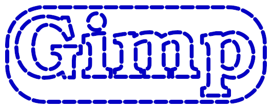
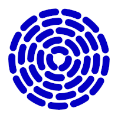

This script renders all the frames necessary to generate a moving dashed line from a path, marquee-style.
The path can be obtained using Layer>Text to path on a text layer

but other sources are possible. This a good way to generate "spinners" if your web site is slow:

The script is started using the Render>Marquee animation entry after right-clicking the target path in the Paths list menu.
The script strokes the path in Line mode (as in Edit>Stroke path), shifting the dash offset for each frame. The path is stroked with
the current foreground color.
Most menus are disabled if there is not at least a layer or channel in the image. Adding a dummy layer has the downside that
you must delete the layer before exporting the animation (or even testing it with the Playback filter), and then add one back to
execute another run. Adding a dummy channel is a better work around:
New channel...If everything is disabled again, go to the Channels list and select the dummy channel again.
Reverse direction: makes the animation move in the opposite direction. By default the animation moves in the order in which
the path anchors are listed, but if the path is the output of Layer>Text to path you may have little control over that. You can use
my ofn-path-edits script to reverse all or specific strokes.Period length: the length of a dash+space unit. This value is subtly adjusted for each stroke to be an exact divider of the stroke length, to
avoid unsightly things to happen on closed strokes.Ratio: the relative length of the dash in the dash+space unit. This sets "raw" dash length, so "cap" styles may make the dash extend beyond this.Line width: the width of the line, in pixelsCap style, Join style, Miter limit, and Anti-aliasing: the usual path stroking options.
Keep in mind that cap styles other than Butt extend the length of the dash by half a line width at each end.Opacity: the opacity of the rendering.Background: how the layer is filled before the path is renderedLayer Name: a pattern to name the layers (see below)The layer name pattern specifies how the layers are named using specific processing data. In the pattern,
names in braces are replaced by the values of these data for the path. For instance, a pattern
of Frame-{step1}/{count} will produce the name Frame-3/50 for the 3rd step in a series of 50.
The available values are:
pathName: the name of the source pathcount: the total number of stepsstep0, step1: the step number.. step0 starts at 0 (as computers count) and
step1 starts at 1 (as humans count).period: the length of the dash+space period, in pixelsratio: the dash to period ratio (from 1 to 99)The name pattern is actually directly used as a Python format specification, so modifiers can be used. The most
useful modifier for numbers is the ability to define a minimal length with zero-padding. This is done by adding :0Nd
to the variable name in the braces, for instance {step1:03d} will insert the step number on at least three digits, with zeros added to the left if necessary: 001, 013, 099, 100.